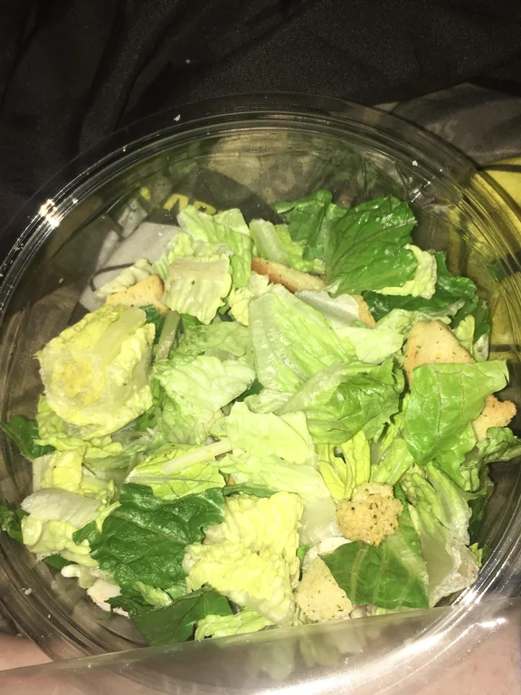

Odin Recipes
Return
Salad Recipe

Description:
This burger isn't for the faint of heart. Because it's not a burger. It's a salad, made from just lettuce and croutons.
Ingredients
- 1 - Whole Head of Lettuce
- Leftover Bread or Premade Croutons
- 1/4 Cup - Olive Oil
- Seasoning to Taste
Steps:
- Chop head of lettuce into desired leaf size.
- If croutons are pre-made skip the following steps:
- Dice your leftover bread into the desired size and toss in olive oil.
- Heat oven to 190C (375F), spread bread cubes in a single layer on a tray.
- Bake till golden, turning once halfway through. Cooking time depends on the cube thickness, but will generally take 15-20 mins
- Let croutons cool completely.
- Mix lettuce and croutons in a bowl, and serve.